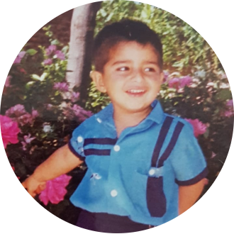
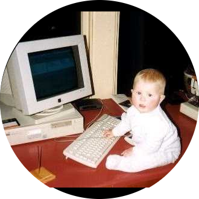

| 2022-01-31 | Balance Engine |
| 2021-12-19 | General Update |
| 2021-05-16 | General Update |
| 2021-05-01 | Project - PWM Motor (Part 5) |
| 2021-04-28 | Torso Design |
| 2021-04-26 | Project - PWM Motor (Part 4) |
| 2021-04-18 | Project - PWM Motor (Part 3) |
| 2021-04-12 | Project - PWM Motor (Part 2) |
| 2021-04-04 | Project - PWM Motor |
| 2020-03-08 | Update - Walk Test |
| 2020-01-30 | Update - Leg Build |
| 2020-01-29 | Update - Leg Design |
| 2019-10-20 | Qualification 2020 Preparation |
| 2018-12-06 | Qualification 2019 |
| 2018-06-03 | Hardware |
| 2018-02-12 | Funding |
We are an up-and-coming humanoid RoboCup team for the kid-sized league 1 based in New Zealand, Christchurch. Our team mostly comprises of students from the University of Canterbury 2 without a robotics background, with a variety of engineering backgrounds and from multiple disciplines. Our commonality is our love for robots and passion to succeed.

Currently we work towards creating a unique low-cost 3D printed humanoid platform, allowing it to be easily configurable and imported into simulations, as well as keeping the financial barrier into the league low.
 |
|
| Daniel Barry | Merel Keijsers |
|  |  |
| Humayun Khan | Munir Shah |
|  | |
| Banon Hopman | Victoria Pryde |
| Seong-Young Her |
Previous team members:
2019-07 |
2nd round RoboCup World Cup (Sydney, Australia) |
The following are our team publications and releases (newest first):
2019-10-06 xYOLO: A Model For Real-Time Object Detection [arXiv]2019-07-31 Electric Sheep Humanoid Robot Platform V12019-07-31 Black Sheep: Low-Cost Open Source Humanoid2018-12-03 Team Description Paper 2019 [arXiv]2018-12-03 Robot Specification 2019The following are press pieces by year and month:
This is a PR package release for use in articles: electric-sheep-pr-2019-04-20.zip.
Please contact us via: danbarry16@googlemail.com regarding any question you may have. Allow a few days for a response!